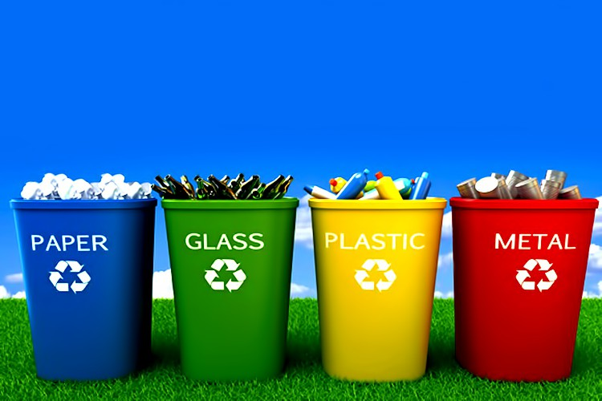

<div id="content" class="site-content">
  <div id="primary" class="content-area width-full">
    <main id="main" class="site-main">
      <div class="cont">
        <h1 class="maincont-ttl">About Us</h1>

        <ul class="b-crumbs">
          <li><a [routerLink]="['/home']">Home</a></li>
          <li>About Us</li>
        </ul>
      </div>
      <div class="maincont page-styling page-full">


        <div class="container mb70 page-styling row-wrap-container row-wrap-nottl">
          <div class="flexslider content_carousel" data-slideshow_speed="7000" data-animation_speed="600" data-pagination="true" data-navigation="false"
            data-stop_on_hover="false"></div>
          <ul class="slides">
            <li class="page-styling content_carousel-slide">
              <p class="content_carousel-img" style="background: url(img/1/about/1.jpg);">
                
              </p>
              <div class="content_carousel-cont">
                <h3>What is "Wastetopia"?</h3>
                <p>Wastetopia is a platform for recycling and reusing industrial waste by linking industrial waste generators
                  with waste recyclers, or other industries that use that waste as a raw material input for their products.
                  Wastetopia is essentially a tool for cutting the costs of both raw material and waste disposal.
                </p>
              </div>
            </li>


          </ul>
        </div>
      </div>
      </main>
  </div>
</div>